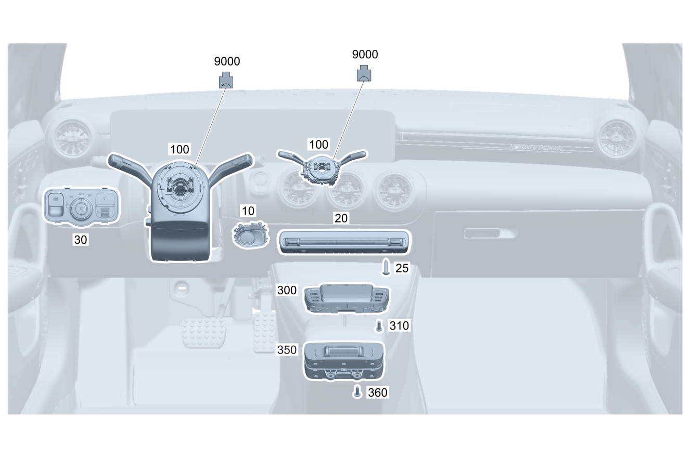

| № | Артикул | Название | Кол. | Примечание | Ограничение |
|---|---|---|---|---|---|
| 10 | A 167 905 49 01 | Кнопочный выключатель (TASTENSCHALTER) | 1 | Выключатель пуска и выключения двигателя | |
| 20 | A 167 905 56 03 | Блок выключателей (SCHALTERBLOCK) | 1 | Верхняя блок\-панель управления | |
| 20 | A 167 905 57 03 | Блок выключателей (SCHALTERBLOCK) | 1 | Верхняя блок\-панель управления | 228/ME05/ME10 |
| 20 | A 167 905 57 03 | Блок выключателей (SCHALTERBLOCK) | 1 | Верхняя блок\-панель управления | 228/ME10 |
| 20 | A 247 905 67 03 | Блок выключателей (SCHALTERBLOCK) | 1 | Верхняя блок\-панель управления | 580+901/581 |
| 20 | A 247 905 69 03 | Блок выключателей (SCHALTERBLOCK) | 1 | Верхняя блок\-панель управления | (580+901/581)+(228/ME05/ME10) |
| 20 | A 247 905 69 03 | Блок выключателей (SCHALTERBLOCK) | 1 | Верхняя блок\-панель управления | (580+901/581)+(228/ME10) |
| 20 | A 167 905 40 06 | Блок выключателей (SCHALTERBLOCK) | 1 | Верхняя блок\-панель управления | 807/808 |
| 20 | A 167 905 41 06 | Блок выключателей (SCHALTERBLOCK) | 1 | Верхняя блок\-панель управления | (228/ME10)+(807/808) |
| 25 | N 000000 008346 | FILLISTER HD SCREW (LINSENKOPFSCHRAUBE) | 2 | Крепление блока переключателей | |
| 30 | A 167 905 12 01 | Блок выключателей (SCHALTERBLOCK) | 1 | Переключатель света и выключатель электрического стояночного тормоза | |
| 30 | A 167 905 98 04 | Блок выключателей | 1 | Переключатель света и выключатель электрического стояночного тормоза | 803+053/804/805/806 |
| 30 | A 167 905 98 04 | Блок выключателей | 1 | Переключатель света и выключатель электрического стояночного тормоза | |
| 30 | A 167 905 14 06 | Блок выключателей | 1 | Переключатель света и выключатель электрического стояночного тормоза | 807/808 |
| 100 | A 167 900 70 10 | Блок управления (STEUERGERAET) | 1 | Блок подрулевых переключателей [672] ДЕТАЛЬ ПОСЛЕ УСТАН.ПРОВЕРИТЬ НА АКТУАЛЬНОСТЬ "ПРОШИВНОГО" ПО | 275 |
| 100 | A 167 900 70 10 | Блок управления (STEUERGERAET) | 1 | Блок подрулевых переключателей [672] ДЕТАЛЬ ПОСЛЕ УСТАН.ПРОВЕРИТЬ НА АКТУАЛЬНОСТЬ "ПРОШИВНОГО" ПО | 275 |
| 100 | A 167 900 72 10 | Блок управления (STEUERGERAET) | 1 | Блок подрулевых переключателей [672] ДЕТАЛЬ ПОСЛЕ УСТАН.ПРОВЕРИТЬ НА АКТУАЛЬНОСТЬ "ПРОШИВНОГО" ПО | 275+443 |
| 100 | A 167 900 72 10 | Блок управления (STEUERGERAET) | 1 | Блок подрулевых переключателей [672] ДЕТАЛЬ ПОСЛЕ УСТАН.ПРОВЕРИТЬ НА АКТУАЛЬНОСТЬ "ПРОШИВНОГО" ПО | 275+443 |
| 100 | A 167 900 74 10 | Блок управления (STEUERGERAET) | 1 | Блок подрулевых переключателей [672] ДЕТАЛЬ ПОСЛЕ УСТАН.ПРОВЕРИТЬ НА АКТУАЛЬНОСТЬ "ПРОШИВНОГО" ПО | |
| 100 | A 167 900 74 10 | Блок управления (STEUERGERAET) | 1 | Блок подрулевых переключателей [672] ДЕТАЛЬ ПОСЛЕ УСТАН.ПРОВЕРИТЬ НА АКТУАЛЬНОСТЬ "ПРОШИВНОГО" ПО | |
| 100 | A 167 900 76 10 | Блок управления (STEUERGERAET) | 1 | Блок подрулевых переключателей [672] ДЕТАЛЬ ПОСЛЕ УСТАН.ПРОВЕРИТЬ НА АКТУАЛЬНОСТЬ "ПРОШИВНОГО" ПО | 443 |
| 100 | A 167 900 76 10 | Блок управления (STEUERGERAET) | 1 | Блок подрулевых переключателей [672] ДЕТАЛЬ ПОСЛЕ УСТАН.ПРОВЕРИТЬ НА АКТУАЛЬНОСТЬ "ПРОШИВНОГО" ПО | 443 |
| 100 | A 167 900 78 23 | Блок управления | 1 | Блок подрулевых переключателей [672] ДЕТАЛЬ ПОСЛЕ УСТАН.ПРОВЕРИТЬ НА АКТУАЛЬНОСТЬ "ПРОШИВНОГО" ПО | 803+275 |
| 100 | A 167 900 09 28 | Блок управления | 1 | Блок подрулевых переключателей [672] ДЕТАЛЬ ПОСЛЕ УСТАН.ПРОВЕРИТЬ НА АКТУАЛЬНОСТЬ "ПРОШИВНОГО" ПО | (803/804/805/806)+275 |
| 100 | A 167 900 09 28 | Блок управления | 1 | Блок подрулевых переключателей [672] ДЕТАЛЬ ПОСЛЕ УСТАН.ПРОВЕРИТЬ НА АКТУАЛЬНОСТЬ "ПРОШИВНОГО" ПО | 275 |
| 100 | A 167 900 02 33 | Блок управления (STEUERGERAET) | 1 | Блок подрулевых переключателей [672] ДЕТАЛЬ ПОСЛЕ УСТАН.ПРОВЕРИТЬ НА АКТУАЛЬНОСТЬ "ПРОШИВНОГО" ПО | 275 |
| 100 | A 167 900 80 23 | Блок управления | 1 | Блок подрулевых переключателей [672] ДЕТАЛЬ ПОСЛЕ УСТАН.ПРОВЕРИТЬ НА АКТУАЛЬНОСТЬ "ПРОШИВНОГО" ПО | 803+275+443 |
| 100 | A 167 900 11 28 | Блок управления | 1 | Блок подрулевых переключателей [672] ДЕТАЛЬ ПОСЛЕ УСТАН.ПРОВЕРИТЬ НА АКТУАЛЬНОСТЬ "ПРОШИВНОГО" ПО | (803/804/805/806)+275+443 |
| 100 | A 167 900 11 28 | Блок управления | 1 | Блок подрулевых переключателей [672] ДЕТАЛЬ ПОСЛЕ УСТАН.ПРОВЕРИТЬ НА АКТУАЛЬНОСТЬ "ПРОШИВНОГО" ПО | 275+443 |
| 100 | A 167 900 08 33 | Блок управления (STEUERGERAET) | 1 | Блок подрулевых переключателей [672] ДЕТАЛЬ ПОСЛЕ УСТАН.ПРОВЕРИТЬ НА АКТУАЛЬНОСТЬ "ПРОШИВНОГО" ПО | 275+443 |
| 100 | A 167 900 82 23 | Блок управления | 1 | Блок подрулевых переключателей [672] ДЕТАЛЬ ПОСЛЕ УСТАН.ПРОВЕРИТЬ НА АКТУАЛЬНОСТЬ "ПРОШИВНОГО" ПО | 803 |
| 100 | A 167 900 13 28 | Блок управления (STEUERGERAET) | 1 | Блок подрулевых переключателей [672] ДЕТАЛЬ ПОСЛЕ УСТАН.ПРОВЕРИТЬ НА АКТУАЛЬНОСТЬ "ПРОШИВНОГО" ПО | 803/804/805/806 |
| 100 | A 167 900 13 28 | Блок управления (STEUERGERAET) | 1 | Блок подрулевых переключателей [672] ДЕТАЛЬ ПОСЛЕ УСТАН.ПРОВЕРИТЬ НА АКТУАЛЬНОСТЬ "ПРОШИВНОГО" ПО | |
| 100 | A 167 900 10 33 | Блок управления (STEUERGERAET) | 1 | Блок подрулевых переключателей [672] ДЕТАЛЬ ПОСЛЕ УСТАН.ПРОВЕРИТЬ НА АКТУАЛЬНОСТЬ "ПРОШИВНОГО" ПО | |
| 100 | A 167 900 84 23 | Блок управления | 1 | Блок подрулевых переключателей [672] ДЕТАЛЬ ПОСЛЕ УСТАН.ПРОВЕРИТЬ НА АКТУАЛЬНОСТЬ "ПРОШИВНОГО" ПО | 803+443 |
| 100 | A 167 900 15 28 | Блок управления | 1 | Блок подрулевых переключателей [672] ДЕТАЛЬ ПОСЛЕ УСТАН.ПРОВЕРИТЬ НА АКТУАЛЬНОСТЬ "ПРОШИВНОГО" ПО | (803/804/805/806)+443 |
| 100 | A 167 900 15 28 | Блок управления | 1 | Блок подрулевых переключателей [672] ДЕТАЛЬ ПОСЛЕ УСТАН.ПРОВЕРИТЬ НА АКТУАЛЬНОСТЬ "ПРОШИВНОГО" ПО | 443 |
| 100 | A 167 900 12 33 | Блок управления (STEUERGERAET) | 1 | Блок подрулевых переключателей [672] ДЕТАЛЬ ПОСЛЕ УСТАН.ПРОВЕРИТЬ НА АКТУАЛЬНОСТЬ "ПРОШИВНОГО" ПО | 443 |
| 100 | A 167 900 65 29 | Блок управления | 1 | Блок подрулевых переключателей [672] ДЕТАЛЬ ПОСЛЕ УСТАН.ПРОВЕРИТЬ НА АКТУАЛЬНОСТЬ "ПРОШИВНОГО" ПО | 275+(805/806) |
| 100 | A 167 900 51 35 | Блок управления (STEUERGERAET) | 1 | Блок подрулевых переключателей [672] ДЕТАЛЬ ПОСЛЕ УСТАН.ПРОВЕРИТЬ НА АКТУАЛЬНОСТЬ "ПРОШИВНОГО" ПО | 275+(805/806) |
| 100 | A 167 900 51 35 | Блок управления (STEUERGERAET) | 1 | Блок подрулевых переключателей [672] ДЕТАЛЬ ПОСЛЕ УСТАН.ПРОВЕРИТЬ НА АКТУАЛЬНОСТЬ "ПРОШИВНОГО" ПО | 275 |
| 100 | A 167 900 67 29 | Блок управления | 1 | Блок подрулевых переключателей [672] ДЕТАЛЬ ПОСЛЕ УСТАН.ПРОВЕРИТЬ НА АКТУАЛЬНОСТЬ "ПРОШИВНОГО" ПО | 275+443+(805/806) |
| 100 | A 167 900 53 35 | Блок управления | 1 | Блок подрулевых переключателей [672] ДЕТАЛЬ ПОСЛЕ УСТАН.ПРОВЕРИТЬ НА АКТУАЛЬНОСТЬ "ПРОШИВНОГО" ПО | 275+443+(805/806) |
| 100 | A 167 900 53 35 | Блок управления | 1 | Блок подрулевых переключателей [672] ДЕТАЛЬ ПОСЛЕ УСТАН.ПРОВЕРИТЬ НА АКТУАЛЬНОСТЬ "ПРОШИВНОГО" ПО | 275+443 |
| 100 | A 167 900 69 29 | Блок управления | 1 | Блок подрулевых переключателей [672] ДЕТАЛЬ ПОСЛЕ УСТАН.ПРОВЕРИТЬ НА АКТУАЛЬНОСТЬ "ПРОШИВНОГО" ПО | 805/806 |
| 100 | A 167 900 55 35 | Блок управления | 1 | Блок подрулевых переключателей [672] ДЕТАЛЬ ПОСЛЕ УСТАН.ПРОВЕРИТЬ НА АКТУАЛЬНОСТЬ "ПРОШИВНОГО" ПО | 805/806 |
| 100 | A 167 900 55 35 | Блок управления | 1 | Блок подрулевых переключателей [672] ДЕТАЛЬ ПОСЛЕ УСТАН.ПРОВЕРИТЬ НА АКТУАЛЬНОСТЬ "ПРОШИВНОГО" ПО | |
| 100 | A 167 900 71 29 | Блок управления | 1 | Блок подрулевых переключателей [672] ДЕТАЛЬ ПОСЛЕ УСТАН.ПРОВЕРИТЬ НА АКТУАЛЬНОСТЬ "ПРОШИВНОГО" ПО | 443+(805/806) |
| 100 | A 167 900 57 35 | Блок управления | 1 | Блок подрулевых переключателей [672] ДЕТАЛЬ ПОСЛЕ УСТАН.ПРОВЕРИТЬ НА АКТУАЛЬНОСТЬ "ПРОШИВНОГО" ПО | 443+(805/806) |
| 100 | A 167 900 57 35 | Блок управления | 1 | Блок подрулевых переключателей [672] ДЕТАЛЬ ПОСЛЕ УСТАН.ПРОВЕРИТЬ НА АКТУАЛЬНОСТЬ "ПРОШИВНОГО" ПО | 443 |
| 100 | A 167 900 88 38 | Блок управления | 1 | Блок подрулевых переключателей; KOSTAL [672] ДЕТАЛЬ ПОСЛЕ УСТАН.ПРОВЕРИТЬ НА АКТУАЛЬНОСТЬ "ПРОШИВНОГО" ПО | 807/808/29X |
| 100 | A 167 900 88 38 | Блок управления | 1 | Блок подрулевых переключателей; KOSTAL [672] ДЕТАЛЬ ПОСЛЕ УСТАН.ПРОВЕРИТЬ НА АКТУАЛЬНОСТЬ "ПРОШИВНОГО" ПО | 807 |
| 300 | A 247 900 40 03 | Блок управления (STEUERGERAET) | 1 | Сенсорная панель [672] ДЕТАЛЬ ПОСЛЕ УСТАН.ПРОВЕРИТЬ НА АКТУАЛЬНОСТЬ "ПРОШИВНОГО" ПО | 901/430/490 |
| 300 | A 247 900 41 03 | Блок управления (STEUERGERAET) | 1 | Сенсорная панель [672] ДЕТАЛЬ ПОСЛЕ УСТАН.ПРОВЕРИТЬ НА АКТУАЛЬНОСТЬ "ПРОШИВНОГО" ПО | (901/430/490)+235 |
| 300 | A 247 900 38 03 | Блок управления (STEUERGERAET) | 1 | Сенсорная панель [672] ДЕТАЛЬ ПОСЛЕ УСТАН.ПРОВЕРИТЬ НА АКТУАЛЬНОСТЬ "ПРОШИВНОГО" ПО | |
| 300 | A 247 900 39 03 | Блок управления (STEUERGERAET) | 1 | Сенсорная панель [672] ДЕТАЛЬ ПОСЛЕ УСТАН.ПРОВЕРИТЬ НА АКТУАЛЬНОСТЬ "ПРОШИВНОГО" ПО | 235 |
| 300 | A 247 900 40 03 | Блок управления (STEUERGERAET) | 1 | Сенсорная панель [672] ДЕТАЛЬ ПОСЛЕ УСТАН.ПРОВЕРИТЬ НА АКТУАЛЬНОСТЬ "ПРОШИВНОГО" ПО | 800+050+(901/430/490)+(460/494) |
| 300 | A 247 900 40 03 | Блок управления (STEUERGERAET) | 1 | Сенсорная панель Рулевое управление: Влево [672] ДЕТАЛЬ ПОСЛЕ УСТАН.ПРОВЕРИТЬ НА АКТУАЛЬНОСТЬ "ПРОШИВНОГО" ПО | (901/430/490)+(460/494) |
| 300 | A 247 900 41 03 | Блок управления (STEUERGERAET) | 1 | Сенсорная панель [672] ДЕТАЛЬ ПОСЛЕ УСТАН.ПРОВЕРИТЬ НА АКТУАЛЬНОСТЬ "ПРОШИВНОГО" ПО | 800+050+(901/430/490)+235+(460/494) |
| 300 | A 247 900 41 03 | Блок управления (STEUERGERAET) | 1 | Сенсорная панель Рулевое управление: Влево [672] ДЕТАЛЬ ПОСЛЕ УСТАН.ПРОВЕРИТЬ НА АКТУАЛЬНОСТЬ "ПРОШИВНОГО" ПО | (901/430/490)+235+(460/494) |
| 300 | A 247 900 38 03 | Блок управления (STEUERGERAET) | 1 | Сенсорная панель [672] ДЕТАЛЬ ПОСЛЕ УСТАН.ПРОВЕРИТЬ НА АКТУАЛЬНОСТЬ "ПРОШИВНОГО" ПО | 800+050+(460/494) |
| 300 | A 247 900 38 03 | Блок управления (STEUERGERAET) | 1 | Сенсорная панель Рулевое управление: Влево [672] ДЕТАЛЬ ПОСЛЕ УСТАН.ПРОВЕРИТЬ НА АКТУАЛЬНОСТЬ "ПРОШИВНОГО" ПО | 460/494 |
| 300 | A 247 900 39 03 | Блок управления (STEUERGERAET) | 1 | Сенсорная панель [672] ДЕТАЛЬ ПОСЛЕ УСТАН.ПРОВЕРИТЬ НА АКТУАЛЬНОСТЬ "ПРОШИВНОГО" ПО | 800+050+235+(460/494) |
| 300 | A 247 900 39 03 | Блок управления (STEUERGERAET) | 1 | Сенсорная панель Рулевое управление: Влево [672] ДЕТАЛЬ ПОСЛЕ УСТАН.ПРОВЕРИТЬ НА АКТУАЛЬНОСТЬ "ПРОШИВНОГО" ПО | 235+(460/494) |
| 300 | A 247 900 40 03 | Блок управления (STEUERGERAET) | 1 | Сенсорная панель [672] ДЕТАЛЬ ПОСЛЕ УСТАН.ПРОВЕРИТЬ НА АКТУАЛЬНОСТЬ "ПРОШИВНОГО" ПО | (800+050/801/802)+(430/490/M036) |
| 300 | A 247 900 40 03 | Блок управления (STEUERGERAET) | 1 | Сенсорная панель [672] ДЕТАЛЬ ПОСЛЕ УСТАН.ПРОВЕРИТЬ НА АКТУАЛЬНОСТЬ "ПРОШИВНОГО" ПО | 430/490/M036 |
| 300 | A 247 900 41 03 | Блок управления (STEUERGERAET) | 1 | Сенсорная панель [672] ДЕТАЛЬ ПОСЛЕ УСТАН.ПРОВЕРИТЬ НА АКТУАЛЬНОСТЬ "ПРОШИВНОГО" ПО | (800+050/801/802)+(M036/430/490)+235 |
| 300 | A 247 900 41 03 | Блок управления (STEUERGERAET) | 1 | Сенсорная панель [672] ДЕТАЛЬ ПОСЛЕ УСТАН.ПРОВЕРИТЬ НА АКТУАЛЬНОСТЬ "ПРОШИВНОГО" ПО | (M036/430/490)+235 |
| 300 | A 247 900 38 03 | Блок управления (STEUERGERAET) | 1 | Сенсорная панель [672] ДЕТАЛЬ ПОСЛЕ УСТАН.ПРОВЕРИТЬ НА АКТУАЛЬНОСТЬ "ПРОШИВНОГО" ПО | 800+050/801/802 |
| 300 | A 247 900 38 03 | Блок управления (STEUERGERAET) | 1 | Сенсорная панель [672] ДЕТАЛЬ ПОСЛЕ УСТАН.ПРОВЕРИТЬ НА АКТУАЛЬНОСТЬ "ПРОШИВНОГО" ПО | |
| 300 | A 247 900 39 03 | Блок управления (STEUERGERAET) | 1 | Сенсорная панель [672] ДЕТАЛЬ ПОСЛЕ УСТАН.ПРОВЕРИТЬ НА АКТУАЛЬНОСТЬ "ПРОШИВНОГО" ПО | (800+050/801/802)+235 |
| 300 | A 247 900 39 03 | Блок управления (STEUERGERAET) | 1 | Сенсорная панель [672] ДЕТАЛЬ ПОСЛЕ УСТАН.ПРОВЕРИТЬ НА АКТУАЛЬНОСТЬ "ПРОШИВНОГО" ПО | 235 |
| 300 | A 247 900 40 03 | Блок управления (STEUERGERAET) | 1 | Сенсорная панель [672] ДЕТАЛЬ ПОСЛЕ УСТАН.ПРОВЕРИТЬ НА АКТУАЛЬНОСТЬ "ПРОШИВНОГО" ПО | (430/490/M036)+(801/802/803) |
| 300 | A 247 900 40 03 | Блок управления (STEUERGERAET) | 1 | Сенсорная панель [672] ДЕТАЛЬ ПОСЛЕ УСТАН.ПРОВЕРИТЬ НА АКТУАЛЬНОСТЬ "ПРОШИВНОГО" ПО | 430/490/M036 |
| 300 | A 247 900 41 03 | Блок управления (STEUERGERAET) | 1 | Сенсорная панель [672] ДЕТАЛЬ ПОСЛЕ УСТАН.ПРОВЕРИТЬ НА АКТУАЛЬНОСТЬ "ПРОШИВНОГО" ПО | (M036/430/490)+235+(801/802/803) |
| 300 | A 247 900 41 03 | Блок управления (STEUERGERAET) | 1 | Сенсорная панель [672] ДЕТАЛЬ ПОСЛЕ УСТАН.ПРОВЕРИТЬ НА АКТУАЛЬНОСТЬ "ПРОШИВНОГО" ПО | (M036/430/490)+235 |
| 300 | A 247 900 38 03 | Блок управления (STEUERGERAET) | 1 | Сенсорная панель [672] ДЕТАЛЬ ПОСЛЕ УСТАН.ПРОВЕРИТЬ НА АКТУАЛЬНОСТЬ "ПРОШИВНОГО" ПО | 801/802/803 |
| 300 | A 247 900 38 03 | Блок управления (STEUERGERAET) | 1 | Сенсорная панель [672] ДЕТАЛЬ ПОСЛЕ УСТАН.ПРОВЕРИТЬ НА АКТУАЛЬНОСТЬ "ПРОШИВНОГО" ПО | |
| 300 | A 247 900 39 03 | Блок управления (STEUERGERAET) | 1 | Сенсорная панель [672] ДЕТАЛЬ ПОСЛЕ УСТАН.ПРОВЕРИТЬ НА АКТУАЛЬНОСТЬ "ПРОШИВНОГО" ПО | 235+(801/802/803) |
| 300 | A 247 900 39 03 | Блок управления (STEUERGERAET) | 1 | Сенсорная панель [672] ДЕТАЛЬ ПОСЛЕ УСТАН.ПРОВЕРИТЬ НА АКТУАЛЬНОСТЬ "ПРОШИВНОГО" ПО | 235 |
| 300 | A 167 900 11 26 | Блок управления | 1 | Сенсорная панель [672] ДЕТАЛЬ ПОСЛЕ УСТАН.ПРОВЕРИТЬ НА АКТУАЛЬНОСТЬ "ПРОШИВНОГО" ПО [414] СТАРУЮ ДЕТАЛЬ УСТАНАВЛИВАТЬ БОЛЬШЕ НЕ РАЗРЕШАЕТСЯ | 321+235+(803+053/804)+(489/490+489/430+(489/490+489)) |
| 300 | A 167 900 20 28 | Блок управления | 1 | Сенсорная панель [672] ДЕТАЛЬ ПОСЛЕ УСТАН.ПРОВЕРИТЬ НА АКТУАЛЬНОСТЬ "ПРОШИВНОГО" ПО [414] СТАРУЮ ДЕТАЛЬ УСТАНАВЛИВАТЬ БОЛЬШЕ НЕ РАЗРЕШАЕТСЯ | 321+235+(803+053/804/805/806)+(489/490+489/430+(489/490+489)) |
| 300 | A 167 900 85 30 | Блок управления (STEUERGERAET) | 1 | Сенсорная панель [672] ДЕТАЛЬ ПОСЛЕ УСТАН.ПРОВЕРИТЬ НА АКТУАЛЬНОСТЬ "ПРОШИВНОГО" ПО | 321+235+(803+053/804/805/806)+(489/490+489/430+(489/490+489)) |
| 300 | A 167 900 52 32 | Блок управления (STEUERGERAET) | 1 | Сенсорная панель [672] ДЕТАЛЬ ПОСЛЕ УСТАН.ПРОВЕРИТЬ НА АКТУАЛЬНОСТЬ "ПРОШИВНОГО" ПО | 321+235+(489/490+489/430+(489/490+489)) |
| 300 | A 177 900 71 11 | Блок управления | 1 | Сенсорная панель [672] ДЕТАЛЬ ПОСЛЕ УСТАН.ПРОВЕРИТЬ НА АКТУАЛЬНОСТЬ "ПРОШИВНОГО" ПО | 321+235+(803+053/804) |
| 300 | A 177 900 20 13 | Блок управления (STEUERGERAET) | 1 | Сенсорная панель [672] ДЕТАЛЬ ПОСЛЕ УСТАН.ПРОВЕРИТЬ НА АКТУАЛЬНОСТЬ "ПРОШИВНОГО" ПО [414] СТАРУЮ ДЕТАЛЬ УСТАНАВЛИВАТЬ БОЛЬШЕ НЕ РАЗРЕШАЕТСЯ | 321+235+(803+053/804/805/806) |
| 300 | A 177 900 79 14 | Блок управления (STEUERGERAET) | 1 | Сенсорная панель [672] ДЕТАЛЬ ПОСЛЕ УСТАН.ПРОВЕРИТЬ НА АКТУАЛЬНОСТЬ "ПРОШИВНОГО" ПО | 321+235+(803+053/804/805/806) |
| 300 | A 177 900 49 16 | Блок управления (STEUERGERAET) | 1 | Сенсорная панель [672] ДЕТАЛЬ ПОСЛЕ УСТАН.ПРОВЕРИТЬ НА АКТУАЛЬНОСТЬ "ПРОШИВНОГО" ПО | 321+235 |
| 300 | A 167 900 59 32 | Блок управления (STEUERGERAET) | 1 | Сенсорная панель [672] ДЕТАЛЬ ПОСЛЕ УСТАН.ПРОВЕРИТЬ НА АКТУАЛЬНОСТЬ "ПРОШИВНОГО" ПО | 235+(803+053/804/805/806)+(489/490+489/430+(489/490+489)) |
| 300 | A 167 900 95 32 | Блок управления (STEUERGERAET) | 1 | Сенсорная панель [672] ДЕТАЛЬ ПОСЛЕ УСТАН.ПРОВЕРИТЬ НА АКТУАЛЬНОСТЬ "ПРОШИВНОГО" ПО | 235+(489/490+489/430+(489/490+489)) |
| 300 | A 167 900 71 32 | Блок управления (STEUERGERAET) | 1 | Сенсорная панель [672] ДЕТАЛЬ ПОСЛЕ УСТАН.ПРОВЕРИТЬ НА АКТУАЛЬНОСТЬ "ПРОШИВНОГО" ПО | 235+(803+053/804/805/806) |
| 300 | A 167 900 97 32 | Блок управления (STEUERGERAET) | 1 | Сенсорная панель [672] ДЕТАЛЬ ПОСЛЕ УСТАН.ПРОВЕРИТЬ НА АКТУАЛЬНОСТЬ "ПРОШИВНОГО" ПО | 235 |
| 300 | A 167 900 82 36 | Блок управления (STEUERGERAET) | 1 | Сенсорная панель [672] ДЕТАЛЬ ПОСЛЕ УСТАН.ПРОВЕРИТЬ НА АКТУАЛЬНОСТЬ "ПРОШИВНОГО" ПО | 321+235+(489/490+489/430+(489/490+489))+806+056 |
| 300 | A 167 900 82 36 | Блок управления (STEUERGERAET) | 1 | Сенсорная панель [672] ДЕТАЛЬ ПОСЛЕ УСТАН.ПРОВЕРИТЬ НА АКТУАЛЬНОСТЬ "ПРОШИВНОГО" ПО | 321+235+(489/490+489/430+(489/490+489)) |
| 300 | A 167 900 84 36 | Блок управления (STEUERGERAET) | 1 | Сенсорная панель [672] ДЕТАЛЬ ПОСЛЕ УСТАН.ПРОВЕРИТЬ НА АКТУАЛЬНОСТЬ "ПРОШИВНОГО" ПО | 321+235+806+056 |
| 300 | A 167 900 84 36 | Блок управления (STEUERGERAET) | 1 | Сенсорная панель [672] ДЕТАЛЬ ПОСЛЕ УСТАН.ПРОВЕРИТЬ НА АКТУАЛЬНОСТЬ "ПРОШИВНОГО" ПО | 321+235 |
| 300 | A 167 900 85 36 | Блок управления (STEUERGERAET) | 1 | Сенсорная панель [672] ДЕТАЛЬ ПОСЛЕ УСТАН.ПРОВЕРИТЬ НА АКТУАЛЬНОСТЬ "ПРОШИВНОГО" ПО | 235+(489/490+489/430+(489/490+489))+806+056 |
| 300 | A 167 900 85 36 | Блок управления (STEUERGERAET) | 1 | Сенсорная панель [672] ДЕТАЛЬ ПОСЛЕ УСТАН.ПРОВЕРИТЬ НА АКТУАЛЬНОСТЬ "ПРОШИВНОГО" ПО | 235+(489/490+489/430+(489/490+489)) |
| 300 | A 167 900 87 36 | Блок управления (STEUERGERAET) | 1 | Сенсорная панель [672] ДЕТАЛЬ ПОСЛЕ УСТАН.ПРОВЕРИТЬ НА АКТУАЛЬНОСТЬ "ПРОШИВНОГО" ПО | 235+806+056 |
| 300 | A 167 900 87 36 | Блок управления (STEUERGERAET) | 1 | Сенсорная панель [672] ДЕТАЛЬ ПОСЛЕ УСТАН.ПРОВЕРИТЬ НА АКТУАЛЬНОСТЬ "ПРОШИВНОГО" ПО | 235 |
| 300 | A 167 900 66 36 | Блок управления (STEUERGERAET) | 1 | Сенсорная панель [672] ДЕТАЛЬ ПОСЛЕ УСТАН.ПРОВЕРИТЬ НА АКТУАЛЬНОСТЬ "ПРОШИВНОГО" ПО | 4B1+(807/808)+(489/490+489/430+(489/490+489)) |
| 300 | A 167 900 66 36 | Блок управления (STEUERGERAET) | 1 | Сенсорная панель [672] ДЕТАЛЬ ПОСЛЕ УСТАН.ПРОВЕРИТЬ НА АКТУАЛЬНОСТЬ "ПРОШИВНОГО" ПО | 4B1+807+(489/490+489/430+(489/490+489)) |
| 300 | A 167 900 68 36 | Блок управления (STEUERGERAET) | 1 | Сенсорная панель [672] ДЕТАЛЬ ПОСЛЕ УСТАН.ПРОВЕРИТЬ НА АКТУАЛЬНОСТЬ "ПРОШИВНОГО" ПО | 4B1+(807/808) |
| 300 | A 167 900 68 36 | Блок управления (STEUERGERAET) | 1 | Сенсорная панель [672] ДЕТАЛЬ ПОСЛЕ УСТАН.ПРОВЕРИТЬ НА АКТУАЛЬНОСТЬ "ПРОШИВНОГО" ПО | 4B1+807 |
| 300 | A 167 900 85 30 | Блок управления (STEUERGERAET) | 1 | Сенсорная панель [672] ДЕТАЛЬ ПОСЛЕ УСТАН.ПРОВЕРИТЬ НА АКТУАЛЬНОСТЬ "ПРОШИВНОГО" ПО | 4B1+(489/490+489/430+(489/490+489))+(006P/127) |
| 300 | A 177 900 79 14 | Блок управления (STEUERGERAET) | 1 | Сенсорная панель [672] ДЕТАЛЬ ПОСЛЕ УСТАН.ПРОВЕРИТЬ НА АКТУАЛЬНОСТЬ "ПРОШИВНОГО" ПО | 4B1+(006P/127) |
| 310 | A 001 984 57 29 | Болт с головкой торкс (SECHSRUNDSCHRAUBE) | 4 | Блок выключателей сенсорной панели; M4X14 | |
| 350 | A 167 905 37 02 | Блок выключателей (SCHALTERBLOCK) | 1 | Нижняя блок\-панель управления | 489+(801/802/803) |
| 350 | A 167 905 37 02 | Блок выключателей (SCHALTERBLOCK) | 1 | Нижняя блок\-панель управления | 489 |
| 350 | A 167 905 08 01 | Блок выключателей (SCHALTERBLOCK) | 1 | Нижняя блок\-панель управления | 489+(490/490+M036)+(801/802/803) |
| 350 | A 167 905 08 01 | Блок выключателей (SCHALTERBLOCK) | 1 | Нижняя блок\-панель управления | 489+(490/490+M036) |
| 350 | A 167 905 37 02 | Блок выключателей (SCHALTERBLOCK) | 1 | Нижняя блок\-панель управления | 489 |
| 350 | A 167 905 07 01 | Блок выключателей (SCHALTERBLOCK) | 1 | Нижняя блок\-панель управления | 489+901 |
| 350 | A 167 905 08 01 | Блок выключателей (SCHALTERBLOCK) | 1 | Нижняя блок\-панель управления | 489+490/489+490+901 |
| 350 | A 167 905 37 02 | Блок выключателей (SCHALTERBLOCK) | 1 | Нижняя блок\-панель управления Рулевое управление: Влево | 489+(460/494)+800+050 |
| 350 | A 167 905 37 02 | Блок выключателей (SCHALTERBLOCK) | 1 | Нижняя блок\-панель управления Рулевое управление: Влево | 489+(460/494) |
| 350 | A 167 905 07 01 | Блок выключателей (SCHALTERBLOCK) | 1 | Нижняя блок\-панель управления Рулевое управление: Влево | 489+901+(460/494)+800+050 |
| 350 | A 167 905 07 01 | Блок выключателей (SCHALTERBLOCK) | 1 | Нижняя блок\-панель управления Рулевое управление: Влево | 489+901+(460/494) |
| 350 | A 167 905 08 01 | Блок выключателей (SCHALTERBLOCK) | 1 | Нижняя блок\-панель управления Рулевое управление: Влево | (489+(490/490+901))+(460/494)+800+050 |
| 350 | A 167 905 08 01 | Блок выключателей (SCHALTERBLOCK) | 1 | Нижняя блок\-панель управления Рулевое управление: Влево | 489+(490/490+901)+(460/494) |
| 350 | A 167 905 37 02 | Блок выключателей (SCHALTERBLOCK) | 1 | Нижняя блок\-панель управления | 489+(800+050/801/802) |
| 350 | A 167 905 37 02 | Блок выключателей (SCHALTERBLOCK) | 1 | Нижняя блок\-панель управления | 489 |
| 350 | A 167 905 37 02 | Блок выключателей (SCHALTERBLOCK) | 1 | Нижняя блок\-панель управления | 489+(803+053/804/805/806/806+056/807) |
| 350 | A 167 905 37 02 | Блок выключателей (SCHALTERBLOCK) | 1 | Нижняя блок\-панель управления | 489 |
| 350 | A 167 905 08 01 | Блок выключателей (SCHALTERBLOCK) | 1 | Нижняя блок\-панель управления | (489+(490/490+M036))+(800+050/801/802) |
| 350 | A 167 905 08 01 | Блок выключателей (SCHALTERBLOCK) | 1 | Нижняя блок\-панель управления | 489+(490/490+M036) |
| 350 | A 167 905 37 02 | Блок выключателей (SCHALTERBLOCK) | 1 | Нижняя блок\-панель управления | 489+(803+053/804/805/806) |
| 350 | A 167 905 34 04 | Блок выключателей (SCHALTERBLOCK) | 1 | Нижняя блок\-панель управления | 489+490+(803+053/804/805/806) |
| 350 | A 167 905 34 04 | Блок выключателей (SCHALTERBLOCK) | 1 | Нижняя блок\-панель управления | 489+490+803+053 |
| 350 | A 167 905 34 04 | Блок выключателей (SCHALTERBLOCK) | 1 | Нижняя блок\-панель управления | 489+490 |
| 350 | A 167 905 71 05 | Блок выключателей (SCHALTERBLOCK) | 1 | Нижняя блок\-панель управления | 489+490+(804/805/806/806+056/807) |
| 350 | A 167 905 71 05 | Блок выключателей (SCHALTERBLOCK) | 1 | Нижняя блок\-панель управления | 489+490 |
| 360 | A 001 984 57 29 | Болт с головкой торкс (SECHSRUNDSCHRAUBE) | 4 | Крепление, блок переключателей; M4X14 | 489/490+489/430/430+(489/489+490) |
| 9000 | A 204 545 04 26 | Корпус штекерной втулки (STECKHUELSENGEHAEUSE) | 1 | Блок подрулевых переключателей; 14\-PIN MLK1.2S | |
| 9000 | A 001 545 93 73 | Блокировка (VERRIEGELUNG) | 1 | Пломбировка TO A 204 545 04 26 | |
| 9000 | A 000 823 02 45 | Блокировка (VERRIEGELUNG) | 1 | Пломбировка |
Позиций: 136 · подписано на схемах: 136 · колесо — плавный зум в курсор, перетаскивание — пан, двойной клик — зум, клик по артикулу — скопировать.